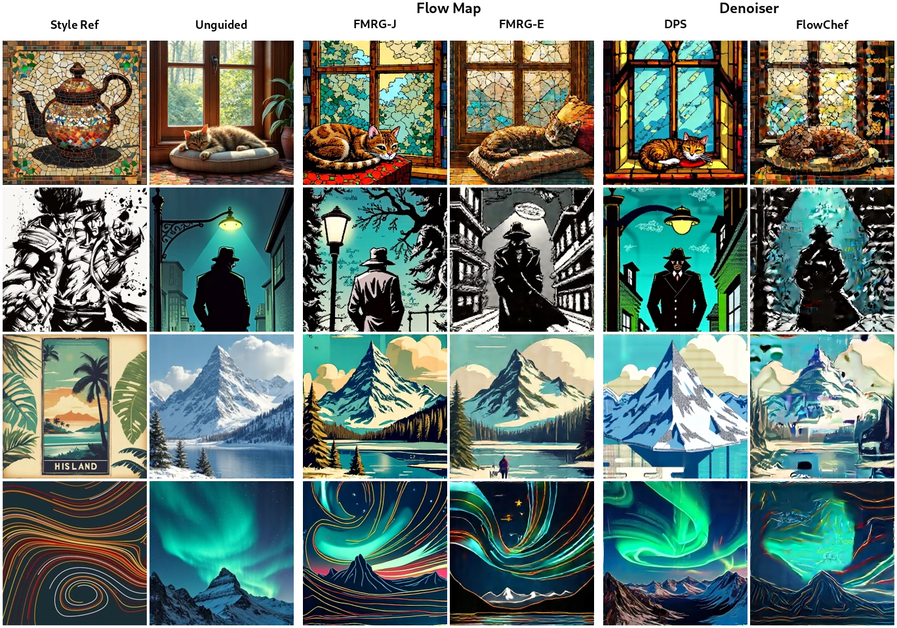
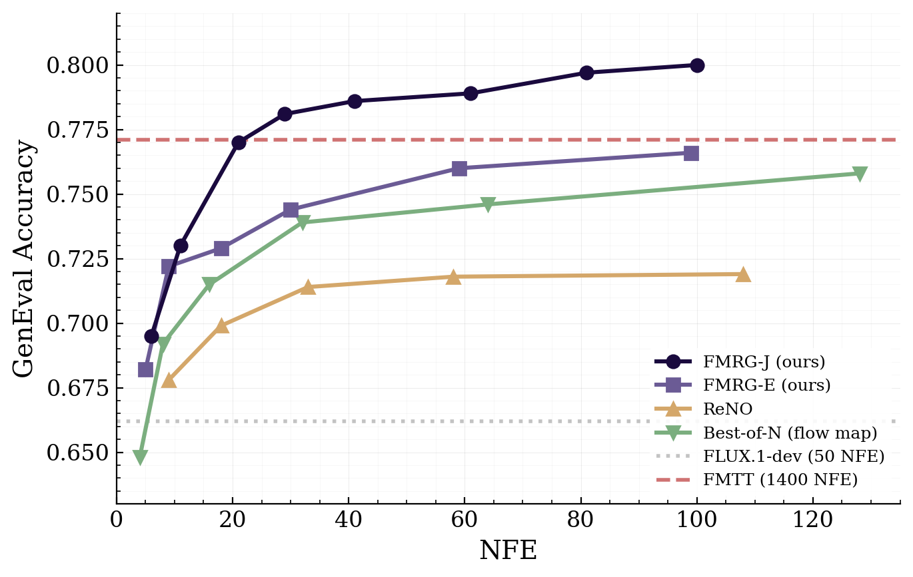
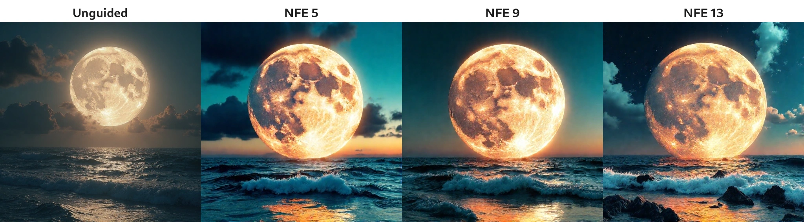
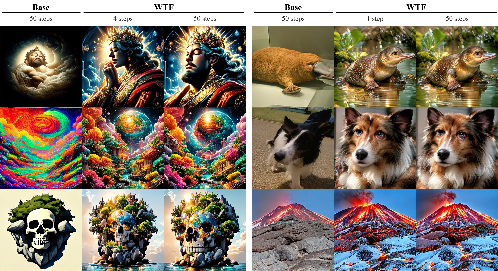

How to Align Your Flow
with
Optimal Control
Flow-based generative models produce excellent samples, and in practice we rarely want just any sample. We want images that people prefer, reconstructions that agree with a measurement, or outputs that follow a prompt more closely. These criteria are usually encoded as a reward $r$, and reward alignment asks how to raise the reward of generated samples while keeping what the pretrained model already does well.
There are two ways to do this. Guidance changes the sampling process at inference time and leaves the model untouched. Fine-tuning changes the model's weights in an additional training phase. Both face the same design question, which is how to measure departure from the pretrained generator. In two recent papers, Flow Map Reward Guidance (FMRG) for guidance and Wasserstein-Tilted Flow Maps (WTF) for fine-tuning, we argue that the standard answer to this question fits flows poorly, and that a different answer turns alignment into a deterministic optimal control problem. Solving that problem efficiently is also what makes flow maps worth having beyond fast sampling.
Why is aligning a flow so awkward?
The standard objective for reward alignment became the default through language models. Early work on fine-tuning language models from human preferences maximized a learned reward while penalizing the KL divergence from the pretrained model, so that the policy could not exploit the reward model by drifting away from natural text (Ziegler et al., 2019; Stiennon et al., 2020). The same objective trained InstructGPT (Ouyang et al., 2022). Its optimum has a closed form, the pretrained distribution reweighted by the exponentiated reward (Korbak et al., 2022), which Direct Preference Optimization turned into a simple training loss (Rafailov et al., 2023).
Diffusion and flow models inherited this objective. Reinforcement learning methods for diffusion treat the denoising chain as a sequence of stochastic actions (Black et al., 2023), with a KL penalty to the pretrained model (Fan et al., 2023). Continuous-time formulations cast KL-regularized fine-tuning as entropy-regularized stochastic optimal control (Uehara et al., 2024), and Adjoint Matching showed that reaching the reward tilt from a flow model requires a particular memoryless noise schedule (Domingo-Enrich et al., 2024). Flow-GRPO converts the deterministic sampler into an equivalent stochastic one so that policy-gradient methods can explore (Liu et al., 2025).
Written for a generative model with distribution $\rho_1$, the objective is
where $\rho_1$ is the distribution of the pretrained model and $\lambda$ sets the strength of the reward. Its solution is the reward-tilted distribution $\tilde\rho_1$, which reweights the base distribution so that samples with high reward become more likely.
The tilt is easy to write down and hard to work with. Sampling it exactly requires adding to the dynamics a correction $\nabla_x \log \mathbb{E}[e^{\lambda r(x_1)} \mid x_t = x]$, an expectation over an auxiliary stochastic process that runs from the current state to the end of generation. Estimating it means simulating many stochastic trajectories, and the exponential lets a few high-reward samples dominate the estimate. Recent work shows that sampling the tilt is computationally intractable even for simple rewards. Multi-particle methods such as sequential Monte Carlo can target it, but need many particles and many integration steps.
The formulation also sits poorly with the models we actually deploy. Its tractable forms rest on stochastic processes, since the KL between path measures is computable for diffusions through Girsanov's theorem. Existing fine-tuning methods therefore convert the flow into a diffusion, fine-tune the diffusion, and convert the result back into a flow. Meanwhile the field has moved toward deterministic samplers, and toward flow maps that generate in one or a few steps. The model is a deterministic flow, but every step of its alignment goes through a stochastic process.
The KL objective became the default through language models, and flows inherited it.
Is this really the right notion of closeness for a flow?
The objective fits language models for structural reasons. An autoregressive model gives the exact log-probability of every sequence as a sum of token log-probabilities, so the KL to the reference model can be estimated directly from samples. Its sampling is already stochastic, one token at a time, which is what policy-gradient methods need. And its outputs are discrete sequences with no geometry between them, so reweighting is essentially the only way to change their distribution.
None of these hold for a flow. Its likelihood requires integrating the divergence of the velocity along each trajectory. Two different deterministic flows from the same noise have mutually singular path measures, so the KL between their paths is infinite, which is why the tractable formulations add noise. Sampling is deterministic and, with flow maps, takes only a few steps. And the outputs live in a continuous space where the model already moves samples, so changing where a sample goes is as natural as changing how likely it is. The KL objective suits autoregressive language models well, but it may be the wrong notion of closeness for flows.
A different notion of closeness
A flow generates by transport. It moves each noise sample $x_0 \sim \rho_0$ along the pretrained velocity $\dot x_t = b_t(x_t)$ until it becomes a sample $x_1$. So a natural way to measure departure from the pretrained model is to ask how much we must steer that transport to reach a different terminal distribution.
WTF makes this precise. The cost of moving a point $x$ to a point $y$ is the least control energy needed to steer the pretrained flow from $x$ to $y$, and the regularizer is the optimal transport cost for this cost, from the noise distribution to a candidate terminal distribution $\nu$.
With $b\equiv 0$, the regularizer reduces to $\tfrac12 W_2^2(\rho_0,\nu)$. With a nontrivial $b$ it measures the effort required beyond what the pretrained model already does.
Replacing the KL with $\mathcal{T}_b$ changes what the optimum does. The regularized problem decomposes over samples, so each noise sample is transported to the endpoint with its best tradeoff between reward and steering cost. The KL tilt instead keeps the samples where they are and changes their weights. One consequence is easy to state. If two points have the same reward, any tilt multiplies both of their densities by the same factor $e^{\lambda r}$, so their density ratio never changes, whereas transport can move mass between them.
The difference matters most when high reward lies where the base model puts little mass. In one dimension both optima can be computed exactly. Move the reward away from the base below and compare the expected rewards. As the reward enters the tail of the base distribution, the KL tilt has little mass to reweight, while the transport optimum moves samples into the high-reward region.
Base $\mathbb E[r]$
–no fine-tuningKL tilt $\mathbb E[r]$
–WTF $\mathbb E[r]$
–The main reason to prefer this regularizer is what it becomes. The transport-regularized problem has the same optimal value as a deterministic optimal control problem.
The solution is again a single deterministic flow with velocity $b_t + u_t^*$. Every sample follows the pretrained dynamics plus a control $u$, collects the reward at the end, and pays for the energy of the control along the way. No auxiliary diffusion appears anywhere. This is the same control problem that FMRG proposed for guidance, where it is solved one trajectory at a time. Alignment of a deterministic flow becomes a problem posed directly on the deterministic flow.
Why flow maps?
This brings us to a question we found harder to answer than we expected. Many methods already turn a pretrained flow into a fast generator, including consistency distillation, distribution matching distillation and adversarial training. If all we need is fewer sampling steps, it is not obvious what a flow map offers over these.
The control problem gives a concrete answer. A flow map $X_{s,t}$ is the solution operator of the flow, so $X_{s,t}(x_s) = x_t$ for any pair of times. A one-step generator maps noise to a sample. A flow map also maps any intermediate state at any time to where the flow would take it, and it is differentiable in that state. Optimal control needs exactly these quantities. The optimal control satisfies
so the control at time $t$ depends on the endpoint that the controlled flow would reach from the current state, and on how that endpoint responds to the state. The flow map appears in the solution of the problem itself. Evaluating the remaining control cost also requires states at intermediate times, which a flow map supplies with a single jump.
Other few-step generators can also be differentiated and fine-tuned, so the advantage is the structure of the flow map and its consistency with the dynamics being optimized. A model that only knows how to produce endpoints from noise has no answer to the question of where a half-generated sample is heading, and that question appears at every time step of the control problem. The two papers use this structure in two settings.
Guidance by looking ahead
At inference time, FMRG solves the control problem along a single trajectory. The exact control is circular, because it needs the flow map of the controlled dynamics, which is the trajectory we are trying to construct. FMRG replaces it with the pretrained flow map.
This signal is justified in two complementary ways. It is the optimal control to second order as $\lambda \to 0$, and for any $\lambda$ it is the optimal correction when the control acts only in a short window around the current time. In practice FMRG alternates two operations. A flow-map step integrates the pretrained dynamics exactly over a large interval, and a guidance step looks ahead with the flow map to the endpoint, evaluates the reward there, and corrects the current state.
The same view organizes existing guidance methods into a hierarchy. Exact optimal control uses the controlled flow map. FMRG uses the pretrained flow map. DPS replaces the flow-map endpoint with a single Euler step, the posterior mean, and so sits at the coarsest level of the hierarchy, together with methods such as FlowDPS and FlowChef that differ mainly in their guidance weights. Read this way, DPS is a one-step approximation of a control problem, rather than an approximation of the reward tilt. The difference is visible in style guidance, where the flow-map variants transfer the reference style and the denoiser-based approximations miss it or add artifacts.

Because each step uses an accurate lookahead, guidance needs very few network evaluations. On GenEval with FLUX, FMRG reaches a score of 0.80 at 100 NFEs. It matches the 0.77 of flow map trajectory tilting, a multi-particle sampler that targets the reward tilt, with 20 NFEs where that method uses 1400, a 70× reduction. On latent inverse problems on AFHQ and FFHQ, FMRG outperforms DPS, FlowDPS and FlowChef while using up to 10× fewer NFEs, and it produces aesthetic improvements with as few as 5 NFEs.


Fine-tuning by learning the control
Guidance solves the control problem anew for every sample. Fine-tuning learns the optimal control once and writes it into the model. WTF does this with the value function, the reward still to come from a state minus the control energy still to spend.
The optimal control is the gradient of the optimal value function. WTF runs policy iteration. It fits the trainable control to the value gradient of a frozen copy of itself, then uses the result as the next reference. A performance-difference identity shows that each such update improves the objective, and that the iteration stops only at the optimal control.
The expensive part of this loop is the value. Estimating it for a stochastic process means rolling out the auxiliary diffusion to the final time and averaging over the noise. Here the flow map supplies the needed states with jumps. Sampling one intermediate time $\tau$ between $t$ and $1$ gives an unbiased estimate that takes two flow-map transitions in place of a multistep rollout.
The only randomness in this estimate comes from a one-dimensional time integral, in contrast to the high-dimensional expectations behind the stochastic value functions of the reward tilt. Its gradient gives the regression target for the control.
Actor-critic
critic evaluations 0A learned critic predicts the value in one evaluation. Differentiating the critic gives an approximate value gradient.
- O(1) evaluations
- learned approximation
- critic training
Multi-step rollout
drift evaluations 0A numerical solver generates the trajectory in $T$ steps. Backpropagation differentiates through those steps to compute the value gradient.
- O(T) evaluations
- backprop through T steps
WTF
flow-map transitions 0Two flow-map transitions produce $x_\tau$ and $x_1$ from $x_t$. Differentiating the resulting value estimate gives the value-gradient target.
- Monte Carlo estimate
- O(1) transitions
- critic-free
The training loss regresses the diagonal of the flow map, its instantaneous velocity, onto the pretrained velocity plus the estimated value gradient, and keeps the off-diagonal flow map consistent with that velocity through self-distillation. Both parts matter. Backpropagating the terminal reward directly through a flow map invites a failure mode in which the endpoint map increases reward while the velocity does not learn the corresponding controlled dynamics. Regressing the velocity onto the value gradient, and distilling the map from it, keeps the two consistent. Every fixed point of the loss is the optimal control together with its flow map. The output is a fine-tuned flow map, so the same checkpoint generates at any budget from one step to many, without a separate distillation stage. We call this simulation-free reinforcement learning, since the rollouts it needs are amortized by the flow map.
The efficiency gain is large. On text-to-image with TiM and HPSv2, every method received the same budget of about 48 GPU-hours on one node of eight H100s. WTF reaches the peak reward of Flow-GRPO with 280× less training compute and the peak reward of Adjoint Matching with 47× less, both KL-regularized methods that rely on stochastic sampling.
At the end of the budget WTF attains an HPSv2 of 0.398 at 50 NFEs, against 0.357 for Adjoint Matching and 0.303 for Flow-GRPO, with comparable diversity. Because the result is a flow map, it reaches 0.401 with 4 NFEs. On ImageNet-256, WTF reaches an HPSv2 of 0.330 at 250 NFEs and 0.319 in a single step after 22 GPU-hours of fine-tuning, while Adjoint Matching reaches 0.243 after 40.
| Text-to-image | NFE | HPSv2 | PickScore | ImageReward | DreamSim | CLIP |
|---|---|---|---|---|---|---|
| Base model | 50 | 0.274 | 21.58 | 0.997 | 0.281 | 0.239 |
| Adjoint Matching | 50 | 0.357 | 22.75 | 1.380 | 0.210 | 0.188 |
| Flow-GRPO | 50 | 0.303 | 22.06 | 1.210 | 0.250 | 0.215 |
| WTF | 4 | 0.401 | 22.97 | 1.383 | 0.250 | 0.220 |
| WTF | 50 | 0.398 | 22.87 | 1.416 | 0.217 | 0.205 |

What changes
| KL reward tilt | Deterministic optimal control | |
|---|---|---|
| What the optimum does | Reweights base samples | Moves each sample toward higher reward |
| Machinery | Auxiliary stochastic process, particles, rollouts | The deterministic flow and its flow map |
| Guidance, GenEval 0.77 | 1400 NFEs (trajectory tilting) | 20 NFEs (FMRG) |
| Fine-tuning compute to the baseline's peak reward | Flow-GRPO, Adjoint Matching | 280× and 47× less (WTF) |
| Output of fine-tuning | A flow, distilled separately for few steps | A flow map that runs at any number of steps |
Takeaway
Every alignment method starts from a choice of what it means to stay close to the pretrained model. That choice is easy to treat as fixed, because the KL objective arrived with mature tools and a clean closed form. But the objective decides which quantities must be computed, and so which algorithms are practical. For flows, choosing KL turned alignment into a problem about stochastic processes, and much of the effort went into building those processes.
Matching the objective to the model changes what is hard. A flow moves samples, so we measured closeness by how much that motion has to change. The resulting problem lives on the flow, its solution is expressed through the flow map, and the objects we built to sample faster turn out to be what makes alignment cheap.
We expect this to hold beyond these two papers. Accelerated samplers such as flow maps are infrastructure for post-training, and an objective adopted from one kind of model deserves a second look when the model we train has a different structure.
Papers and code
- How to Guide Your Flow: Few-Step Alignment via Flow Map Reward Guidance. Jerry Y. Huang*, Justin Lin*, Sheel Shah, Kartik Nair, Nicholas M. Boffi. ICML 2026. arXiv · Project page · Code
- WTF?! Simulation-Free Reinforcement Learning with Wasserstein-Tilted Flow Maps. Abbas Mammadov†*, Jerry Y. Huang†*, Justin Lin*, Partha Kaushik, Sheel Shah, Kartik Nair, Yee Whye Teh, Nicholas M. Boffi. NeurIPS 2026 Spotlight. arXiv · Project page · Code
†Project lead · *Equal contribution